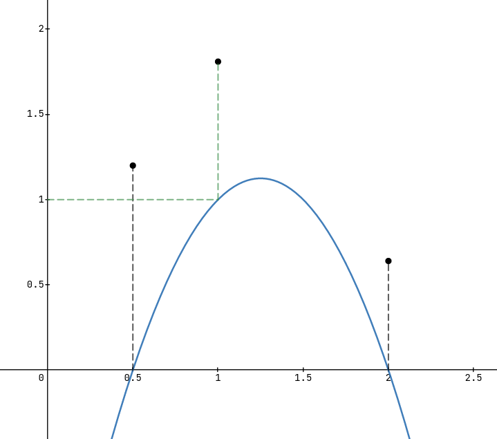
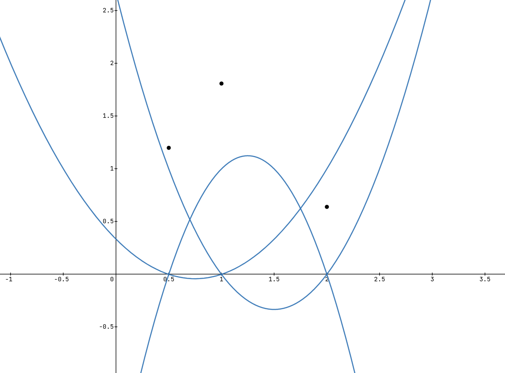
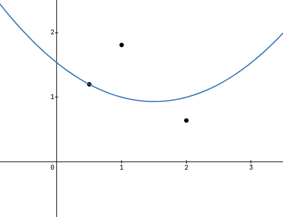

TODO
The underlying idea for this kind of interpolation is rather simple and intuitive. One starts by constructing a polynomial for every point in our input set of points $s = \{(x_1, y_1), (x_2, y_2), \dots, (x_n, y_n)\}$ which satisfies some important properties.
What we want our polynomial $l_i$ for some $x_i$ to look like is to have a value of $0$ at all x values of the points in our set, besides the one we are constructing this polynomial for. This x value needs to have a value of $1$ which will be clear why very soon. We call the polynomial we constructed this way the basis polynomial to the point.
The way we will achieve this is in practice is by multiplying all $(x - x_n)$ for which $n\neq i$. This way for any point we plug in, that is not our target point, the entire product will evaluate to $0$, as one of the factors is $0$.
We can write this entire product as $$z_i(x) = \prod_{\underset{m\neq i}{m = 0}}^k {(x-x_m)}$$ To scale the value of this polynomial to be $1$ at $x_i$ we need to divide $z_i(x)$ by $z_i(x_i)$ which gives $$l_i(x) = \frac{z_i(x)}{z(x_i)}$$ As both of these terms are the same product we can combine them as a single fraction in one product. In the end we have our basis polynomials in dependence of any one point as $$l_i(x) = \prod_{\underset{m\neq i}{m = 0}}^k{\left(\frac{x - x_m}{x_i - x_m}\right)}$$
Now that we have a way to find the basis polynomial for all points we can put it all together. We need to combine these polynomials in order to, remember our original goal, get a single polynomial that goes through all the points.
Due to the very specific way we constructed our polynomials by, we can start by adding all the basis polynomials like $$\sum_{n=0}^{|s|}{l_n(x)}$$ What we end up with you can see here
As you can see, the sum of all our polynomials is a constant function, namely $f(x) = 1$. You can easily see why this is the case by looking at how we symmetrically constructed our polynomials. We can slightly modify the way we add these base polynomials to find the polynomial going through all the points.
What we will do, is scale each addend by the y-value of the point the respective polynomial was constructed from. This way, as our function at this x-value is $1$, because of the way we constructed it, scaling it by $y_i$ will result in it being $y_i$ in this point. Furthermore, because all the other polynomials are guaranteed to have a value of $0$ in this point, summing up all the scaled polynomials will result in a single polynomial, going through all the points in $s$
And there we have it! We constructed the polynomial that goes through all the points in our input set $s$! To recap what we did: We started off by constructing a polynomial for each point which had zeroes for every other point in our set. We scaled this to equal $1$ at itself, so when rescaling at the end while summing up all the polynomials we got exactly the y-values we needed to meet all points.
We can write all of this down like this $$l_i(x) = \prod_{\underset{m\neq i}{m = 0}}^k{\left(\frac{x - x_m}{x_i - x_m}\right)}$$ $$f(x) = \sum_{n=0}^{|s|}{y_n \cdot l_n(x)}$$ or even more compact as $$f(x) = \sum_{n=0}^{|s|}{\left(y_n \prod_{\underset{m\neq n}{m = 0}}^k{\left(\frac{x - x_m}{x_n - x_m}\right)}\right)}$$